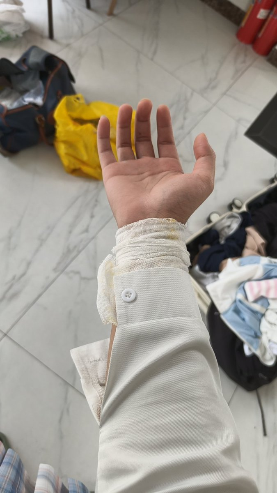

拱北靠北
@psyofsouthwest
@Swathy17531761 保护好自己哦，让自己感觉不舒服的指令都是必须拒绝的哦

小汐🍥🏳️⚧️
@Swathy17531761
昨天下午拍的，不好看勿喷，药娘。
我的手那天因为被欺骗伤害了我自己划了手腕，那天紫砂晚上在坟墓旁边喝了白酒昏了过去，这几天浑身没劲犯困，应该是流的血太多了导致的，身体不太好，啥都干不了了唉，#药娘 #跨性别 #男娘 https://t.co/JNL1LzBDbh